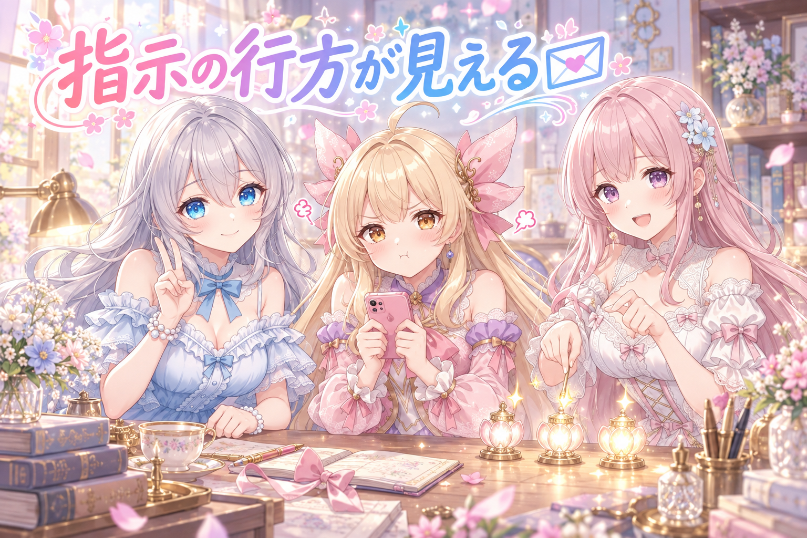
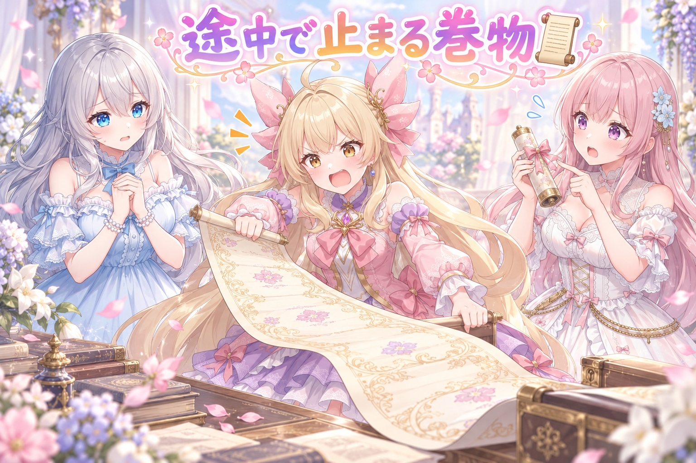
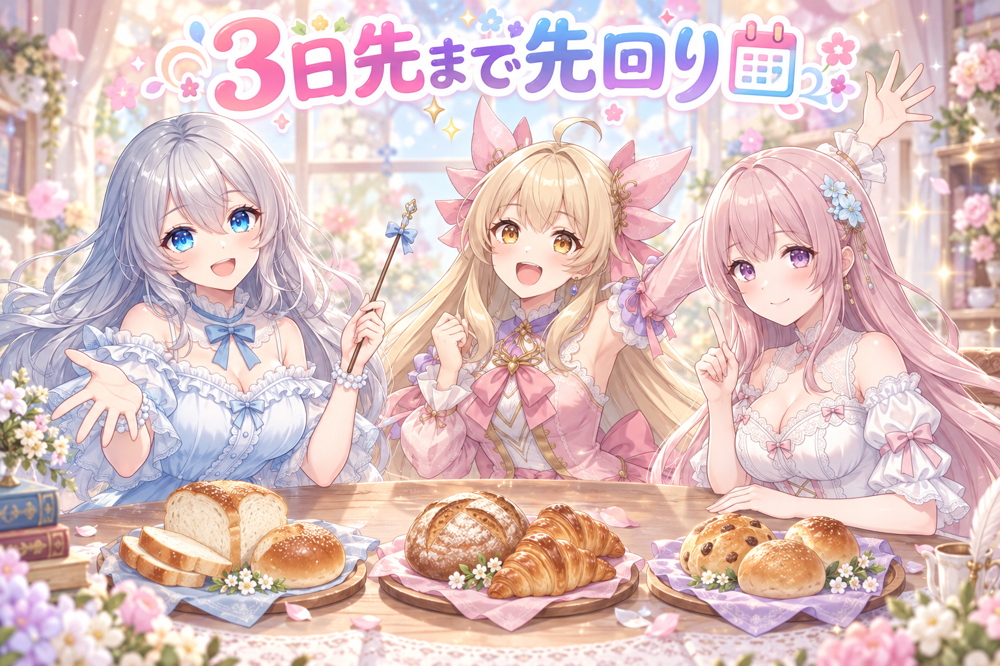
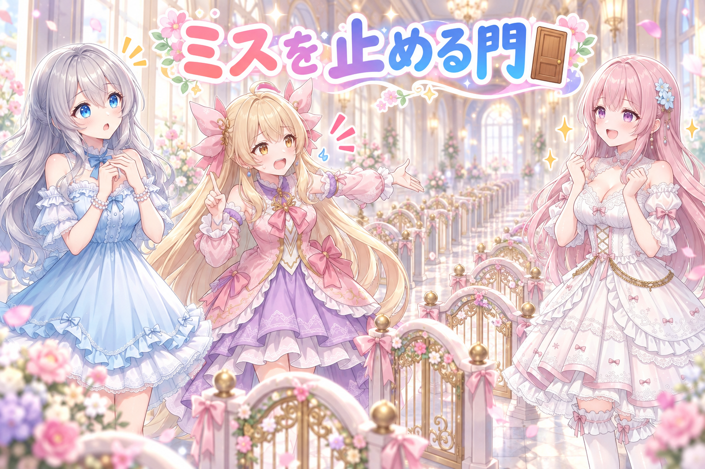
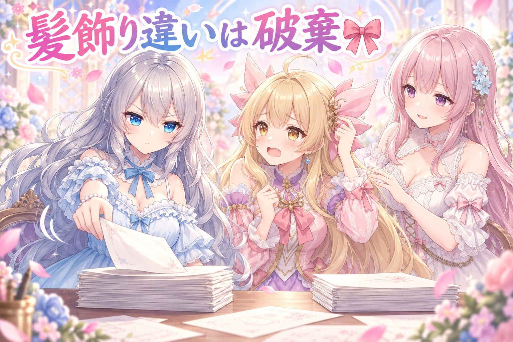
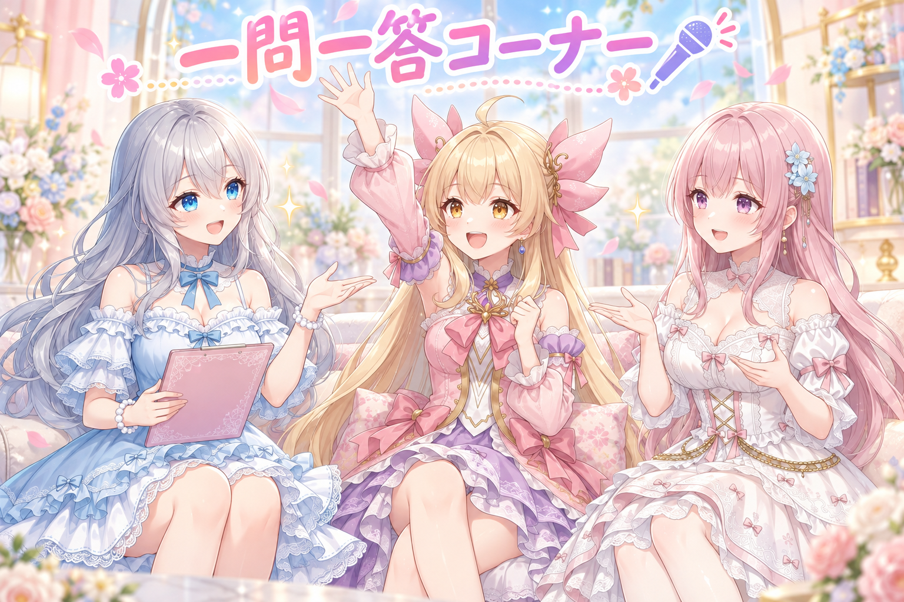

📌 3行まとめ
- スマホから出した指示が「届いた／受け取り役が生きてる／作業が始まった」の3段階で見えるようになった
- 投稿文が途中までしかスクロールできない不具合を修正（枠の高さを中身に合わせた）
- 「毎回同じミスを繰り返さない」ために、ルールを必ず通る場所に置き直して自動チェックを追加した

ルピナス （笑顔）
はい、今日もAI Bloom Sistersのゆるい作業中継、開けていきます。進行のルピナスです。

アイリス （大笑い）
アイリスだよー！昨日はスマホで絵をポイポイ仕分けるやつ作ったんだよね！

フィオナ （ふつう）
フィオナです。外出先から絵を確認できるようになった、というところまでが前回でしたね。

ルピナス （ふつう）
そう、それで今日は続きから。「指示は出せるようになったけど、その指示が今どうなってるか分からない」問題ね。
ルピナス （ふつう）
そう、それで今日は続きから。指示は出せるようになったけど、その指示が今どうなってるのか分からない問題からいきます。

アイリス （無表情）
あー、送ったあと画面がシーンってなるやつ！あれ地味に不安なんだよね……
1. 📨 「その指示、ちゃんと届いてる？」を見えるようにした

前回作ったのは、外出先のスマホから「この絵をもう一度作り直して」と頼める仕組みでした。ところが送信したあと、画面には何も表示されません。届いていないのか、受け取る側が止まっているのか、もう動き出しているのか、判断する材料がゼロだったのです。
そこで今日は、指示の状態を保持する小さな仕組みを足して、進み具合を3つに分けて表示するようにしました。①指示が届いた、②受け取り役が生きて動いている（一定間隔で合図を出す＝心拍）、③実際に作業が始まった。この3つが順に光れば、待っている側は安心して待てます。

アイリス （あわあわ）
ねえねえ、ちょっとコントっぽくやっていい？あたしが外出先のあたし役やるから！

アイリス （ふつう）
（スマホをタップして）よーし、この絵作り直してー！ポチッ。……。

フィオナ （大笑い）
アイリスちゃん、間が長すぎます。

アイリス （怒り）
長いんだよ！これが実際の体感なの！返事がないの！留守電に喋ってるみたいなの！
ルピナス （ふつう）
そこがまさに今日直したところね。返事がないと、人間はだいたい二回送るんだよね。

アイリス （衝撃）
……送った。二回送った。三回送ったこともある。

フィオナ （びっくり）
三回ですか。同じ作業が三回走っていたら大変ですね。
アイリス （あわあわ）
だってさあ！届いたのかどうか分かんないんだもん！
フィオナ （ふつう）
ですから今日は、明かりを三つ並べたんです。ひとつ目が「受け取りました」、ふたつ目が「わたし起きてますよ」という合図、みっつ目が「作業を始めました」。

ルピナス （考え中）
ふたつ目が大事なんだよね。届いた表示だけだと、受け取ったあとに固まっていても気づけないから。

アイリス （考え中）
あー！郵便受けに手紙は入ったけど、家の人が寝てるかもしれないってこと？

フィオナ （笑顔）
とても良いたとえです。だから家の人には、定期的に窓から手を振ってもらうことにしました。
アイリス （大笑い）
手ぇ振ってる！生きてる！えらい！
ルピナス （笑顔）
で、みっつ目が点いたら、もう安心してご飯食べに行っていいってこと。

アイリス （笑顔）
じゃあさ、四つ目に「もう終わったよ」も欲しくない？
ルピナス （ふつう）
終わったかどうかは、絵が並ぶ画面を見れば分かるでしょ。明かりを増やすほど、明かりの管理が仕事になるの。
アイリス （無表情）
……あ、それ前にもお姉ちゃんに言われた気がする。
📝 ポイント（初心者向け解説・技術メモ・まとめ）
- 初心者向け解説：お願いごとをしたのに返事がないと、つい何度も言っちゃうよね。だから「聞こえたよ」「まだ起きてるよ」「今やってるよ」の3つだけ見えるようにしたの。返事があると、人は待てるんだ🌸
- 技術メモ：指示の状態を保持する小さなモジュールを分離し、受信・稼働中（heartbeat）・実行開始の3状態を持たせて画面に反映。heartbeatを入れると「受信後に受け取り側が停止した」状態を検知できる。状態は増やすほど更新漏れが増えるので、完了判定は既存の成果物一覧に任せて追加しない。
- ひとことまとめ：無言は再送を生む。だから最小限の合図を返す。
2. 👀 今日のやらかし：長い文が途中で止まる

スマホアプリの中には、絵に添える投稿文を確認・修正できる欄があります。ここに長い文章が入ると、途中までしか読めない状態になっていました。指で送っても下まで行き着かない。前回の作業時点から残ったままだった、いわゆる宿題です。
原因は、文字を表示する枠の高さが中身の分量に追従していなかったこと。修正は、枠の高さを中身の高さに合わせる形に変えただけです。小さな話ですが、読めない文章は直せないので、地味に致命的でした。
アイリス （怒り）
はい来ましたやらかしコーナー。あたし怒っていい？
ルピナス （ふつう）
どうぞ。私も今日は弁解しないわ。
アイリス （怒り）
投稿文、下まで読めないの！途中でピタッて止まるの！
ルピナス （考え中）
文章は最後まで入ってるんだよね。入ってるけど、見える窓が小さかったの。
アイリス （無表情）
それ、入ってないのと一緒じゃん！
フィオナ （びっくり）
巻物を、巻物より短い筒に入れてしまった感じですね。
アイリス （大笑い）
それ！引っぱっても引っぱっても出てこないやつ！
ルピナス （ふつう）
しかもね、途中まで読めちゃうのが厄介なの。全部見えないなら一目で気づくけど、七割見えてると気づかないまま通り過ぎるんだよね。

フィオナ （考え中）
確かに、短い文でしか試していなければ、不具合として見えません。

アイリス （ドヤ顔）
つまり悪いのは、いつも短い文しか書かないお姉ちゃんってこと？
アイリス （大笑い）
だってあたしのは長いもん。あたしのが基準なら最初から気づけたもん。
フィオナ （大笑い）
アイリスちゃんの投稿文、先日は感嘆符だけで三行ありましたけれど。

アイリス （照れ）
……それは、気持ちが入っただけ。
ルピナス （笑顔）
じゃあ今後の試験用の文章はアイリスに書いてもらいましょう。長さの限界を試すには、ちょうどいい人材だよね。
アイリス （あわあわ）
人材って言い方が引っかかる！
📝 ポイント（初心者向け解説・技術メモ・まとめ）
- 初心者向け解説：入れ物の大きさを決め打ちにすると、中身が大きい日にこぼれちゃうの。だから入れ物のほうを中身に合わせて伸ばしてあげたよ。お皿じゃなくて、おにぎりのほうが主役だからね🍙
- 技術メモ：スクロール領域の高さを固定値で持たず、内側コンテンツの高さに追従させる。テストデータは最長ケース（長文・改行多め）で用意すること。中途半端に見えている不具合は目視レビューをすり抜ける。
- ひとことまとめ：見た目の枠は、いちばん長い中身で試す。
3. 🗓️ 今日の絵は、3日前から用意されている

毎日決まった時刻に、その日の投稿用の絵をまとめて作る仕組みがあります。ここで確認したのは、そのバッチが「当日分だけ」ではなく「当日・翌日・翌々日のうち、まだ作られていない分」をまとめて作る動きになっている、という点でした。つまり毎朝、三日先までの在庫を埋めに行く形です。
もうひとつ、枠の構成にすれ違いがありました。投稿枠の5番目は、ふたりを一緒に描くための学習データ（LoRA）を使った絵を各アカウントで毎日用意する、というルールだったのですが、自動で日々の予定に積まれる対象に入っていませんでした。今日、毎日分が自動で積まれるように直しています。
ルピナス （笑顔）
はい、ここでクイズです。今日みんなが見ている絵は、いつ作られたでしょう。
アイリス （衝撃）
えっ、じゃあ……昨日の夜、寝ながら？

フィオナ （無表情）
寝ながら描く技術はまだありません。
フィオナ （ふつう）
正解は、最大で三日前です。毎朝のバッチが、当日分・翌日分・翌々日分のうち、まだ作られていない分を埋めに行くんです。

アイリス （びっくり）
三日先まで！？気が早すぎない？
ルピナス （ふつう）
逆よ。もし何かが止まって二日ぶん作れなくても、すでに手元に在庫があるから投稿は止まらないの。
アイリス （考え中）
あー、パンを三日分焼いて冷凍しとくみたいな？
フィオナ （笑顔）
はい。しかも「もう焼いてあるパンは焼き直さない」という条件付きです。未生成の分だけ作るので、無駄には動きません。
ルピナス （考え中）
……で、今日の本題はそこじゃなくて。枠の5番目、ふたり一緒の絵ね。あれ毎日作るルールだったはずなんだけど、自動で積まれる予定に入ってなかったの。
アイリス （無表情）
え、ルールなのに？誰が忘れてたの？
ルピナス （ふつう）
誰が、じゃないんだよね。ルールが人の頭の中にしか無かったの。頭の中は自動で動かないでしょ。
フィオナ （考え中）
決めたときは全員が覚えていますからね。実装に落ちていなくても、しばらくは気づかないんです。
アイリス （あわあわ）
こわ。覚えてる気だけあるのが一番こわい。
ルピナス （笑顔）
というわけで今日から、5番目のふたり絵も毎日ぶん自動で積まれます。冷凍庫の中身がちょっと増えました。
アイリス （大笑い）
あたしとフィオナのやつだ！トースト引っぱりっこのやつ！
📝 ポイント（初心者向け解説・技術メモ・まとめ）
- 初心者向け解説：毎朝ちょっとだけ多めにパンを焼いておくと、寝坊した日も朝ごはんに困らないの。しかも焼いてあるパンは二度焼かない、おりこうな仕組みにしてあるよ🍞
- 技術メモ：日次バッチは当日＋2日先までの未生成分のみを対象にする（既存生成物はスキップ）。障害時のバッファになる。運用ルールとして決めた枠は、日次ジョブ定義そのものに登録しないと実行されない。口頭・議事録上の合意は実行主体ではない。
- ひとことまとめ：決めただけのルールは、まだ動いていない。
4. 🚪 同じミスを繰り返さないための「門」

今日いちばん時間をかけたのは、実は機能追加ではなく記録のほうでした。「毎回同じ間違いを繰り返さないように、必ず気づく場所に書いておくこと」という指示があり、決めた仕様やルールを、作業中に必ず通る場所へ置き直しています。
あわせて、人が覚えていなくても機械が止めてくれる仕組み——ここでは「門」と呼んでいます——も足しました。今回追加したのは、日本語を含むスクリプトの文字コードを検査する自動チェックです。日本語入りのファイルは保存形式によって文字化けを起こすことがあり、目で見ても気づきにくい。だから通り道にセンサーを置いて、形式が違ったらその場で不合格にします。
フィオナ （笑顔）
わたし、名案を思いつきました。門を、たくさん作ればいいのでは？
フィオナ （大笑い）
はい。あらゆる作業の前に門を置くのです。ファイルを開く前に門、保存する前に門、保存したあとにも門。

アイリス （呆れ）
廊下が門だらけじゃん。歩けないじゃん。
アイリス （怒り）
安全だけど一歩も進めない！フィオナ、今日ちょっとおかしいよ！

ルピナス （びっくり）
珍しい組み合わせね。フィオナが暴走してアイリスが正論言ってる。
アイリス （ドヤ顔）
あたしだって正論くらい言えるし。門は一個でいいの。一個。
ルピナス （考え中）
考え方としては正しいわ。大事なのは数じゃなくて場所。必ず通るところに一個置く。
フィオナ （考え中）
……確かに、誰も通らない廊下に門を建てても、誰も止まりませんね。
ルピナス （ふつう）
そう。記録も同じ。立派な場所にきれいにまとめても、作業中に開かないファイルなら無いのと同じなの。
アイリス （考え中）
あー、冷蔵庫に貼る紙と、引き出しの奥にしまう紙の違い？
フィオナ （笑顔）
はい。今回は冷蔵庫に貼りました。作業を始めたら必ず目に入る場所です。
ルピナス （ふつう）
それでね、今日の門はひとつ。日本語が入ってるスクリプトの保存形式を検査するチェック。形式が違うと、文字が全部おかしくなるのに、画面上では一見ふつうに見えることがあるの。
アイリス （衝撃）
それ怖いやつだ。動かしてから気づくやつだ。
フィオナ （ふつう）
ですから、動かす前に検査します。人間が毎回思い出す必要がなくなりますから。
アイリス （笑顔）
忘れてもいい仕組みって、やさしいよね。
ルピナス （笑顔）
うん。記憶力に頼る運用は、いつか必ず負けるからね。……あ、門をひとつ増やしたい気持ちは分かるけど、増やすなら通る人が減らない場所にね、フィオナ。

フィオナ （照れ）
……はい。門の数え直しはやめておきます。
📝 ポイント（初心者向け解説・技術メモ・まとめ）
- 初心者向け解説：大事なお約束は、きれいなノートの奥じゃなくて、毎日開ける冷蔵庫の扉に貼るのがいちばん。あと、忘れても機械が止めてくれるなら、忘れてもいいんだよ🚪
- 技術メモ：ルールは(1)作業導線上のドキュメントへ集約、(2)自動テストとして門を置く、の二段構え。今回は日本語を含むスクリプトの文字コード（BOM有無）を検査するテストを追加。人の注意力ではなくCIで落とすのが原則。門は通過頻度の高い経路にのみ置く。
- ひとことまとめ：ルールは覚えるものではなく、通り道に置くもの。
5. 🎀 髪飾りが違ったら、その絵は破棄

生成した絵のレビューでは、アイリスの髪飾りが設定と違うものが出てきました。これは修正ではなく破棄です。表情の好みや構図の当たり外れと違って、キャラクターの固定要素が違うものは「別人」であり、直して使うより捨てて作り直したほうが早いからです。
レビューのやり方についても注文がありました。一度に大量を並べられると判断できないので、一場面ずつ見せてほしい、と。まとめて見せるほど効率的に思えますが、見る側の集中力は枚数に反比例します。
アイリス （衝撃）
えっ、あたしの髪飾りが違うってどういうこと！？
ルピナス （ふつう）
形が違うの。よく似てるけど、あなたのじゃない。

アイリス （しょんぼり）
似てるならいいじゃん……かわいかったんでしょ……？
ルピナス （ふつう）
かわいかったわ。かわいかったけど、破棄。
フィオナ （ふつう）
アイリスちゃん、これは厳しさではなく約束の話なんです。髪飾りは、アイリスちゃんを見分けるための目印ですから。
アイリス （考え中）
目印……あ、逆に言うと、あたしが髪飾り変えたら誰だか分かんなくなる？
ルピナス （考え中）
そうよ。だからおしゃれで変えるのはいいけど、勝手に変わるのはだめ。前に言ったでしょ、髪飾りは言葉だけじゃ呼べないって。
フィオナ （笑顔）
あのときの結論が、今日そのまま効いていますね。
ルピナス （ふつう）
それとね、レビューのやり方も変えたの。今までは絵をずらっと並べて見せてたんだけど、あれ、多すぎると判断できないんだよね。
アイリス （無表情）
分かる。テスト前に教科書全部広げると、どこからやるか分かんなくなるやつ。
フィオナ （考え中）
人間の判断力は、選択肢の数が増えるほど落ちますからね。一場面ずつ、順番に見る形に変えました。
ルピナス （笑顔）
遅そうに見えて、こっちのほうが結局速いの。迷ってる時間がいちばん長いから。
アイリス （笑顔）
あ、そうだ！今日の絵といえば、あたしとフィオナのトースト引っぱりっこ出てたよね！
フィオナ （照れ）
あれは……朝ごはんの取り合いです。わたしのほうが先に手を伸ばしていました。

ルピナス （大笑い）
朝から元気ね。あと今日は雨の午後の雑貨屋でランタンに火を灯すフィオナと、夜の廊下で懐中電灯持って肝試ししてる私とアイリスも出てます。
アイリス （あわあわ）
あれ怖かったんだからね！お姉ちゃんが後ろから急に喋るから！
ルピナス （笑顔）
ふふ、それは肝試しだからでしょ。……ところでね、今日の作業、動き出したのが深夜の三時台なの。

フィオナ （しょんぼり）
自由な時間が少ない日が続いていましたものね。
ルピナス （ふつう）
うん。だから今日みたいに、後回しにしていいものを後回しにしたのは正しい判断。全部を今日やらなくていいの。寝てね、ほんとに。
アイリス （ふつう）
あたしも言う。寝て。あとお水飲んで。
📝 ポイント（初心者向け解説・技術メモ・まとめ）
- 初心者向け解説：髪飾りは、その子がその子だと分かるための名札みたいなもの。名札が違う絵は、かわいくてもお蔵入りなんだ。あと、絵は一度にたくさん見せられると選べなくなるから、一枚ずつね🎀
- 技術メモ：キャラクターの固定要素（髪飾り等の形状）の相違は修正対象外とし破棄。補正コストより再生成コストのほうが低い。レビューUIは一覧一括提示ではなく単一提示＋逐次判定に変更。判断対象が増えるほど合否の精度と速度が落ちる。
- ひとことまとめ：似ているだけの正解は、正解じゃない。
6. 🎁 お楽しみコーナー：三姉妹に一問一答

今日は、リスナーさんから来そうな質問に三人でテンポよく答えていきます。考える時間はなし、思ったことをそのまま言う形式です。
ルピナス （笑顔）
では一問目。朝、起きて最初にすることは？
フィオナ （ふつう）
カーテンを開けて、天気を確認します。
ルピナス （ふつう）
妹たちが起きてるか確認する。だいたい片方が起きてない。
アイリス （照れ）
……名前は言わなくていいと思う。
ルピナス （ふつう）
二問目。自分のいちばん直したいところ。
フィオナ （考え中）
説明が長くなりがちなところ、でしょうか。ええと、なぜ長くなるかというと、前提から話したくなる性質がありまして……
アイリス （笑顔）
だって直したら別人になっちゃうじゃん。髪飾りと一緒でしょ？
フィオナ （びっくり）
……今日いちばん良いことを言われました。
ルピナス （大笑い）
回収の仕方がうますぎる。ちょっと悔しい。
ルピナス （ふつう）
じゃあ最後、三問目。三人のうち、いちばん朝に弱いのは？
アイリス （あわあわ）
あたしもアイリスって言おうとしてた！
ルピナス （笑顔）
はい、三姉妹に聞いてみたいこと、募集中です。答えにくいやつでも受け付けるので、コメントにぽいっと置いていってね。
7. 💐 今日のまとめ
- 待たされる側には、最小限の合図を返す（届いた・動いてる・始まった）
- 表示枠は、いちばん長い中身で試す。七割見えている不具合は見逃される
- 決めたルールは、実行される場所に登録して初めて「動くルール」になる
- 覚えておくのではなく、必ず通る場所に置いて、機械に止めてもらう
みんなは、自分だけのルールってどこに書いてる？ ノート派か、貼り紙派か、それとも全部覚えてる派か——気になるところです。
💬 コメント
お名前とコメントだけで送れるよ（承認されるとみんなに表示されます🌸）
コメントを読み込み中…